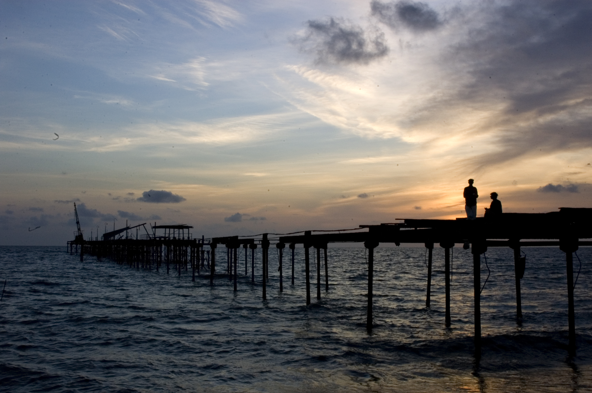
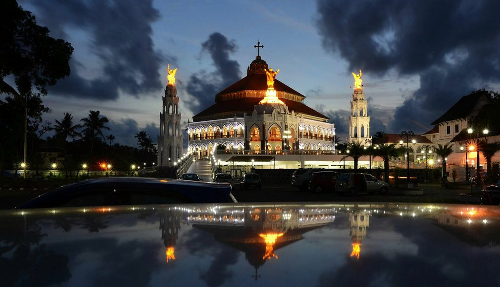
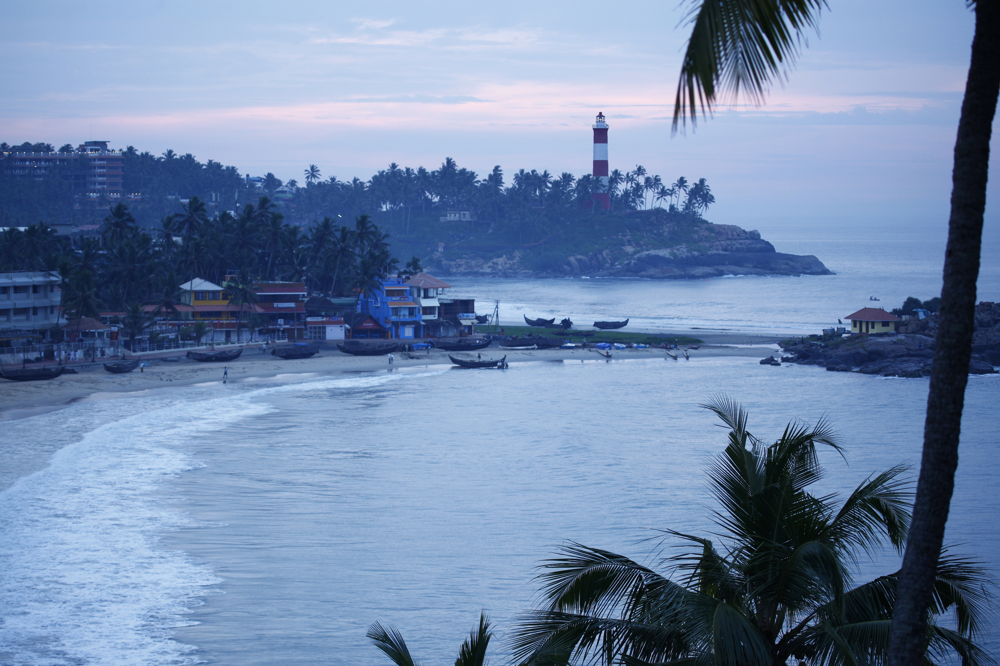
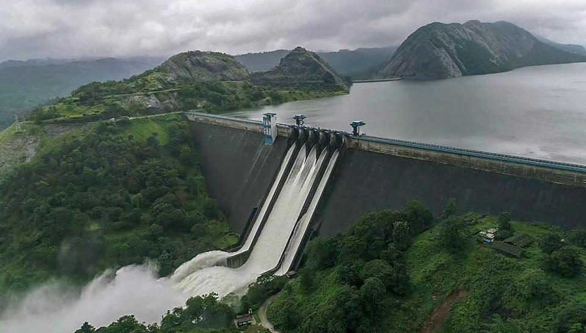
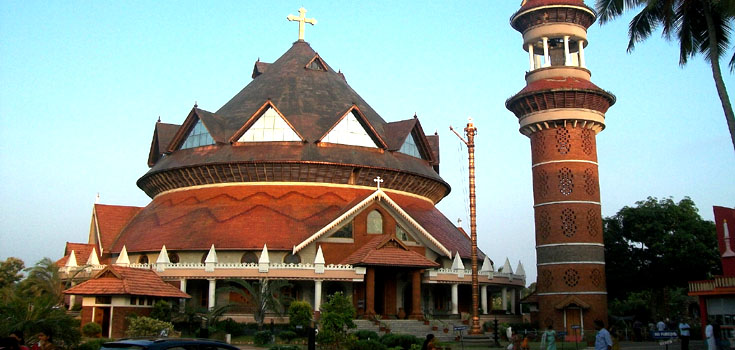
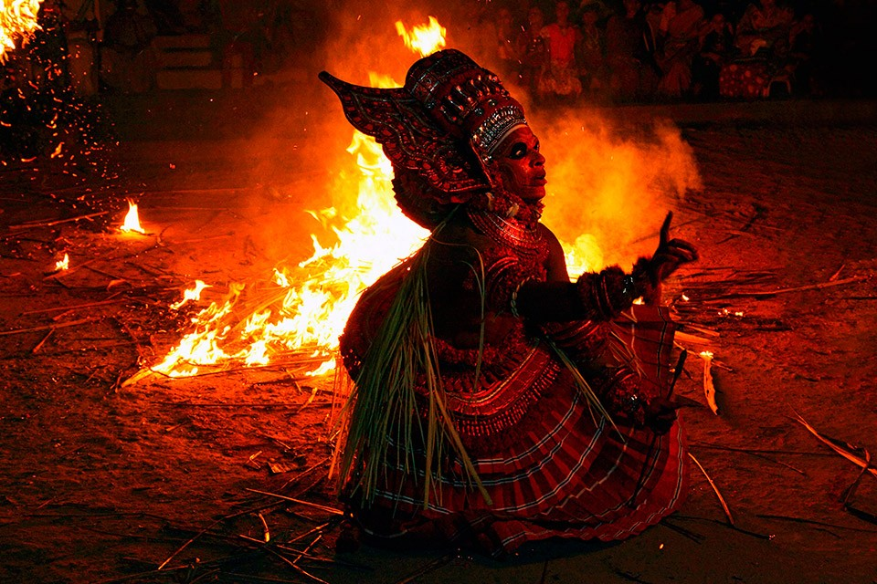
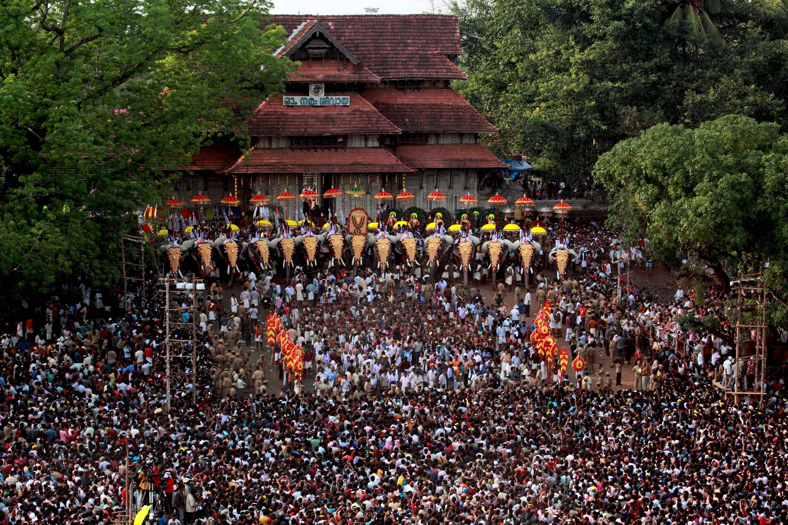
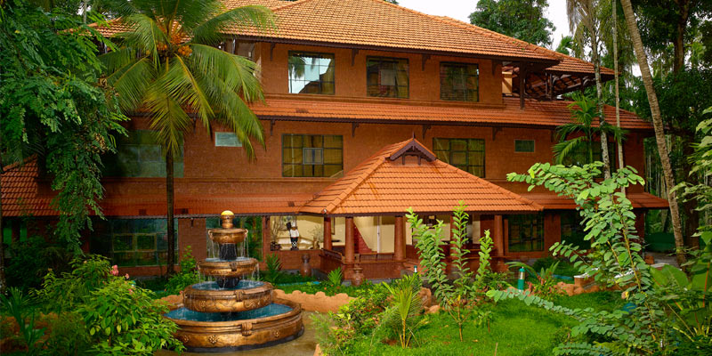
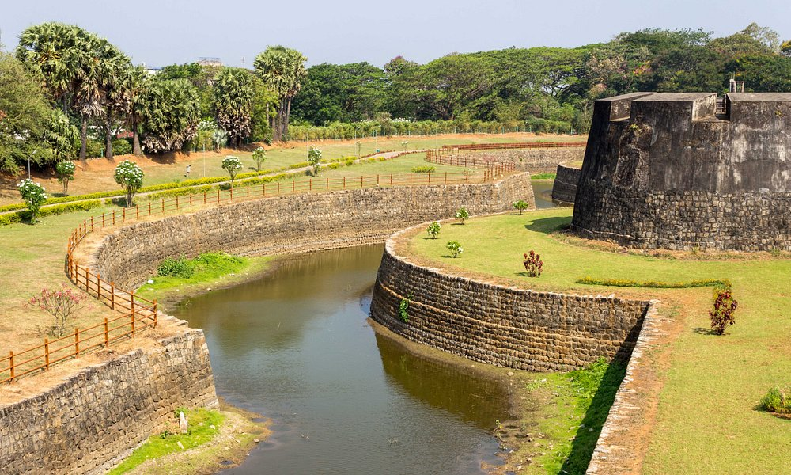
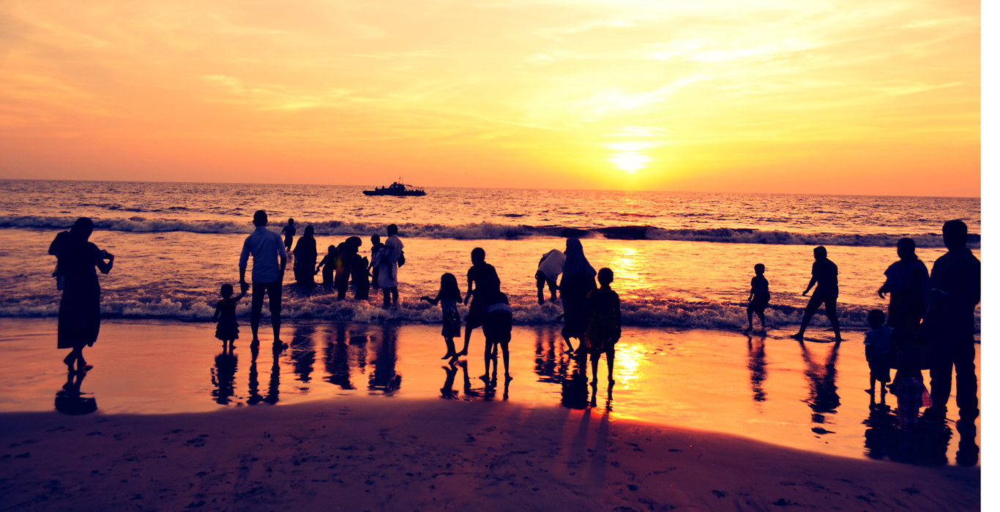

Explore the Districts of kerala
-

Alappuzha
Alappuzha , also known by its former name Alleppey, is the administrative headquarters of Alappuzha district in the Indian state of Kerala
Read More -

Ernakulam
The main tourist attractions in Ernakulam are the Hill Palace Museum, Madhavan Nayar Foundation, Kaladi, Kodanad, Chendamangalam, Malayatoor.
Read More -

Thiruvanthapuram
Tourism in Thiruvananthapuram (Trivandrum) district in the Indian state of Kerala promotes the area's hill stations, back waters, beaches, lagoons.
Read More -

Idukki
As a tourist destination, Idukki offers diverse attractions like Wildlife sancturies, Hill stations, Dams, Spece plantation tours, Mountain treks.
Read More -
.jpg)
Kottayam
Kottayam Tourism An ancient town located on a hilltop bordered by the western ghats on the east and the thrilling Vembanad Lake on the west
Read More -

Pathanamthitta
Pathanamthitta district is known as the 'Headquarters of Pilgrimage Tourism', of the Kerala State. Situated near the Western Ghats and bordered by the hills
Read More -

Kannur
Kannur is one among the northernmost districts in the south western state of Kerala in India. The old name 'Cannanore' is the anglicised form of the Malayalam word Kannur
Read More -
Wayanad
Wayanad is an agrarian district located in the north-east region of the Indian state of Kerala, at the southernmost tip of the Deccan Plateau.
Read More -

Thrissur
Officially known as the cultural capital of Kerala, Thrissur is famous for fostering classical Keralan performing arts, religious sites and the renowned Thrissur Pooram festival
Read More -

Kasargod
Kasaragod Tourism Kasargod is a small coastal town in Northern Pary of Kerala displaying a delightful blend of various religions, culture and bounty of nature
Read More -

Malappuram
Enclosed by the Nilgiris in the east and the Arabian Sea on the west, Malappuram is a prominent district in Kerala which is commonly known as "the land on the hilltop.
Read More -

Palakkad
Palakkad district has its own special characteristics. The fort of Hyder Ali tells us the story of Mysore invasions and the advent of the British to this part of the country
Read More -

Kollam
The tourism attraction of Kollam is based on its vibrant landscapes. Kollam provides a miniature of Kerala with representations of all its products.
Read More -

KoZhikode
The tourism attraction of Kollam is based on its vibrant landscapes. Kollam provides a miniature of Kerala with representations of all its products.
Read More